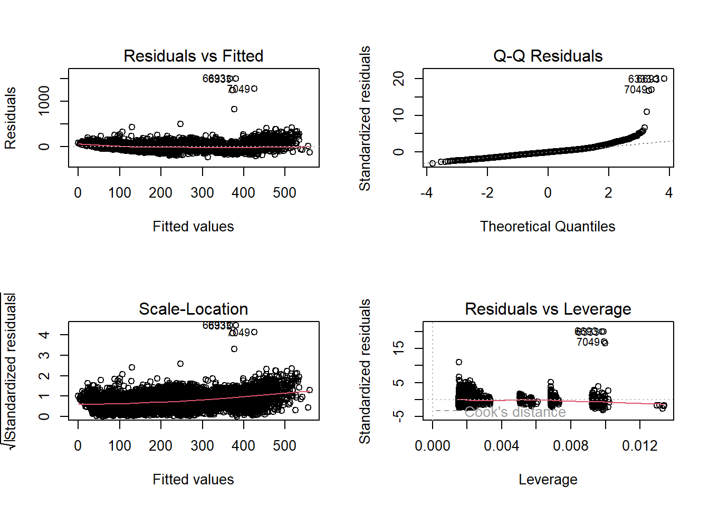

Call:
lm(formula = Umsatz ~ Wochentag + Produktname + Temperatur +
IsFerien + IsFeiertag + KielerWoche, data = train_data_baseline)
Residuals:
Min 1Q Median 3Q Max
-235.37 -42.32 -4.41 33.21 1503.17
Coefficients:
Estimate Std. Error t value Pr(>|t|)
(Intercept) 338.0372 3.2721 103.310 < 2e-16 ***
WochentagDonnerstag 3.9087 3.2632 1.198 0.2310
WochentagFreitag 7.3300 3.2728 2.240 0.0251 *
WochentagMittwoch 0.0858 3.2526 0.026 0.9790
WochentagMontag 2.1790 3.2584 0.669 0.5037
WochentagSamstag 52.8684 3.2586 16.224 < 2e-16 ***
WochentagSonntag 60.9769 3.2606 18.701 < 2e-16 ***
ProduktnameBrot -289.1639 2.7970 -103.384 < 2e-16 ***
ProduktnameCroissant -246.4076 2.7970 -88.098 < 2e-16 ***
ProduktnameKonditorei -321.4995 2.8234 -113.871 < 2e-16 ***
ProduktnameKuchen -129.6404 2.7970 -46.350 < 2e-16 ***
ProduktnameSaisonbrot -320.6788 5.3565 -59.868 < 2e-16 ***
Temperatur 3.4002 0.1306 26.041 < 2e-16 ***
IsFerienTRUE 45.5064 2.1872 20.805 < 2e-16 ***
IsFeiertagTRUE 102.1598 6.8854 14.837 < 2e-16 ***
KielerWocheTRUE 27.8890 5.8465 4.770 1.88e-06 ***
---
Signif. codes: 0 '***' 0.001 '**' 0.01 '*' 0.05 '.' 0.1 ' ' 1
Residual standard error: 75.6 on 7471 degrees of freedom
(6 Beobachtungen als fehlend gelöscht)
Multiple R-squared: 0.7388, Adjusted R-squared: 0.7383
F-statistic: 1409 on 15 and 7471 DF, p-value: < 2.2e-16Baseline Model
1 Feature Selection
- Wochentag
- Produkt
- Temperatur
- Schulferien
- Feiertag
- Kieler Woche
2 Implementation
2.1 All Products
3 Evaluation
R-squared: 0.7388141 Adjusted R-squared: 0.7382897 
3.1 Implementation for different products
3.1.1 Brot
Call:
lm(formula = Umsatz ~ Wochentag + Temperatur + IsFerien + IsFeiertag +
KielerWoche, data = product_data)
Residuals:
Min 1Q Median 3Q Max
-110.771 -19.438 -2.914 14.981 238.594
Coefficients:
Estimate Std. Error t value Pr(>|t|)
(Intercept) 101.4955 2.5490 39.818 < 2e-16 ***
WochentagDonnerstag 17.1250 3.0397 5.634 2.12e-08 ***
WochentagFreitag 7.9463 3.0435 2.611 0.00912 **
WochentagMittwoch -0.4162 3.0207 -0.138 0.89044
WochentagMontag 14.4579 3.0317 4.769 2.04e-06 ***
WochentagSamstag 27.4099 3.0300 9.046 < 2e-16 ***
WochentagSonntag -44.4428 3.0395 -14.622 < 2e-16 ***
Temperatur 0.9699 0.1202 8.073 1.43e-15 ***
IsFerienTRUE 20.7802 2.0196 10.289 < 2e-16 ***
IsFeiertagTRUE -8.8285 6.3270 -1.395 0.16312
KielerWocheTRUE 10.8316 5.3452 2.026 0.04290 *
---
Signif. codes: 0 '***' 0.001 '**' 0.01 '*' 0.05 '.' 0.1 ' ' 1
Residual standard error: 31.06 on 1450 degrees of freedom
(1 Beobachtung als fehlend gelöscht)
Multiple R-squared: 0.3925, Adjusted R-squared: 0.3883
F-statistic: 93.68 on 10 and 1450 DF, p-value: < 2.2e-163.1.2 Broetchen
Call:
lm(formula = Umsatz ~ Wochentag + Temperatur + IsFerien + IsFeiertag +
KielerWoche, data = product_data)
Residuals:
Min 1Q Median 3Q Max
-261.34 -48.99 -4.50 44.84 877.82
Coefficients:
Estimate Std. Error t value Pr(>|t|)
(Intercept) 218.2879 6.6131 33.008 < 2e-16 ***
WochentagDonnerstag 6.7222 7.8863 0.852 0.3941
WochentagFreitag 14.9573 7.8961 1.894 0.0584 .
WochentagMittwoch -3.5837 7.8370 -0.457 0.6475
WochentagMontag 7.6598 7.8654 0.974 0.3303
WochentagSamstag 125.6622 7.8610 15.986 < 2e-16 ***
WochentagSonntag 190.9446 7.8857 24.214 < 2e-16 ***
Temperatur 9.3037 0.3117 29.847 < 2e-16 ***
IsFerienTRUE 109.0972 5.2397 20.821 < 2e-16 ***
IsFeiertagTRUE 170.1374 16.4147 10.365 < 2e-16 ***
KielerWocheTRUE 80.7415 13.8674 5.822 7.13e-09 ***
---
Signif. codes: 0 '***' 0.001 '**' 0.01 '*' 0.05 '.' 0.1 ' ' 1
Residual standard error: 80.59 on 1450 degrees of freedom
(1 Beobachtung als fehlend gelöscht)
Multiple R-squared: 0.6778, Adjusted R-squared: 0.6756
F-statistic: 305 on 10 and 1450 DF, p-value: < 2.2e-163.1.3 Saisonbrot
Call:
lm(formula = Umsatz ~ Wochentag + Temperatur + IsFerien + IsFeiertag +
KielerWoche, data = product_data)
Residuals:
Min 1Q Median 3Q Max
-53.836 -21.532 -5.409 16.659 101.324
Coefficients: (1 not defined because of singularities)
Estimate Std. Error t value Pr(>|t|)
(Intercept) 82.9396 6.6738 12.428 < 2e-16 ***
WochentagDonnerstag 2.0588 7.5084 0.274 0.784187
WochentagFreitag 2.4052 7.7082 0.312 0.755305
WochentagMittwoch -1.6251 7.7881 -0.209 0.834900
WochentagMontag -4.3073 7.6427 -0.564 0.573594
WochentagSamstag 8.0470 7.7250 1.042 0.298672
WochentagSonntag -7.2987 7.5973 -0.961 0.337736
Temperatur -2.0762 0.5811 -3.573 0.000432 ***
IsFerienTRUE -11.5112 6.7137 -1.715 0.087797 .
IsFeiertagTRUE -3.7283 15.7993 -0.236 0.813664
KielerWocheTRUE NA NA NA NA
---
Signif. codes: 0 '***' 0.001 '**' 0.01 '*' 0.05 '.' 0.1 ' ' 1
Residual standard error: 31.87 on 225 degrees of freedom
(1 Beobachtung als fehlend gelöscht)
Multiple R-squared: 0.08967, Adjusted R-squared: 0.05326
F-statistic: 2.463 on 9 and 225 DF, p-value: 0.010743.1.4 Kuchen
Call:
lm(formula = Umsatz ~ Wochentag + Temperatur + IsFerien + IsFeiertag +
KielerWoche, data = product_data)
Residuals:
Min 1Q Median 3Q Max
-392.08 -39.66 -6.41 30.00 1312.66
Coefficients:
Estimate Std. Error t value Pr(>|t|)
(Intercept) 231.3674 7.3333 31.550 < 2e-16 ***
WochentagDonnerstag 1.0090 8.7451 0.115 0.9082
WochentagFreitag 10.6179 8.7559 1.213 0.2255
WochentagMittwoch 6.6531 8.6904 0.766 0.4441
WochentagMontag -17.2947 8.7219 -1.983 0.0476 *
WochentagSamstag 52.2986 8.7170 6.000 2.49e-09 ***
WochentagSonntag 49.0898 8.7444 5.614 2.37e-08 ***
Temperatur 1.6797 0.3457 4.859 1.31e-06 ***
IsFerienTRUE 39.9515 5.8103 6.876 9.12e-12 ***
IsFeiertagTRUE 281.5877 18.2023 15.470 < 2e-16 ***
KielerWocheTRUE 22.6190 15.3775 1.471 0.1415
---
Signif. codes: 0 '***' 0.001 '**' 0.01 '*' 0.05 '.' 0.1 ' ' 1
Residual standard error: 89.37 on 1450 degrees of freedom
(1 Beobachtung als fehlend gelöscht)
Multiple R-squared: 0.2327, Adjusted R-squared: 0.2275
F-statistic: 43.99 on 10 and 1450 DF, p-value: < 2.2e-163.1.5 Croissant
Call:
lm(formula = Umsatz ~ Wochentag + Temperatur + IsFerien + IsFeiertag +
KielerWoche, data = product_data)
Residuals:
Min 1Q Median 3Q Max
-174.36 -28.82 -4.08 23.84 438.28
Coefficients:
Estimate Std. Error t value Pr(>|t|)
(Intercept) 61.5497 3.9026 15.772 < 2e-16 ***
WochentagDonnerstag -1.8512 4.6539 -0.398 0.69086
WochentagFreitag 3.2974 4.6597 0.708 0.47928
WochentagMittwoch -0.1477 4.6248 -0.032 0.97453
WochentagMontag 4.8785 4.6416 1.051 0.29341
WochentagSamstag 57.1907 4.6390 12.328 < 2e-16 ***
WochentagSonntag 61.0589 4.6536 13.121 < 2e-16 ***
Temperatur 5.7157 0.1840 31.071 < 2e-16 ***
IsFerienTRUE 59.8757 3.0921 19.364 < 2e-16 ***
IsFeiertagTRUE 38.3485 9.6868 3.959 7.9e-05 ***
KielerWocheTRUE 25.4891 8.1835 3.115 0.00188 **
---
Signif. codes: 0 '***' 0.001 '**' 0.01 '*' 0.05 '.' 0.1 ' ' 1
Residual standard error: 47.56 on 1450 degrees of freedom
(1 Beobachtung als fehlend gelöscht)
Multiple R-squared: 0.6063, Adjusted R-squared: 0.6036
F-statistic: 223.3 on 10 and 1450 DF, p-value: < 2.2e-163.1.6 Konditorei
Call:
lm(formula = Umsatz ~ Wochentag + Temperatur + IsFerien + IsFeiertag +
KielerWoche, data = product_data)
Residuals:
Min 1Q Median 3Q Max
-88.001 -17.368 -3.741 11.872 289.853
Coefficients:
Estimate Std. Error t value Pr(>|t|)
(Intercept) 85.6168 2.5067 34.156 < 2e-16 ***
WochentagDonnerstag -2.1356 2.9872 -0.715 0.4748
WochentagFreitag 1.1253 3.0044 0.375 0.7081
WochentagMittwoch -1.5583 2.9952 -0.520 0.6030
WochentagMontag 2.6478 2.9919 0.885 0.3763
WochentagSamstag 7.4423 2.9906 2.489 0.0129 *
WochentagSonntag 60.5947 2.9684 20.413 < 2e-16 ***
Temperatur -0.6452 0.1183 -5.454 5.81e-08 ***
IsFerienTRUE 0.1439 2.0125 0.072 0.9430
IsFeiertagTRUE 48.7139 6.8192 7.144 1.46e-12 ***
KielerWocheTRUE -4.0226 5.3031 -0.759 0.4483
---
Signif. codes: 0 '***' 0.001 '**' 0.01 '*' 0.05 '.' 0.1 ' ' 1
Residual standard error: 29.99 on 1397 degrees of freedom
(1 Beobachtung als fehlend gelöscht)
Multiple R-squared: 0.3557, Adjusted R-squared: 0.3511
F-statistic: 77.13 on 10 and 1397 DF, p-value: < 2.2e-16 Produkt R_squared
Brot 0.39249043
Broetchen 0.67780552
Croissant 0.60630525
Konditorei 0.35572937
Kuchen 0.23274617
Saisonbrot 0.08967049| Produkt | R²-Wert | |
|---|---|---|
| Brot | Brot | 0.3924904 |
| Broetchen | Broetchen | 0.6778055 |
| Croissant | Croissant | 0.6063052 |
| Konditorei | Konditorei | 0.3557294 |
| Kuchen | Kuchen | 0.2327462 |
| Saisonbrot | Saisonbrot | 0.0896705 |